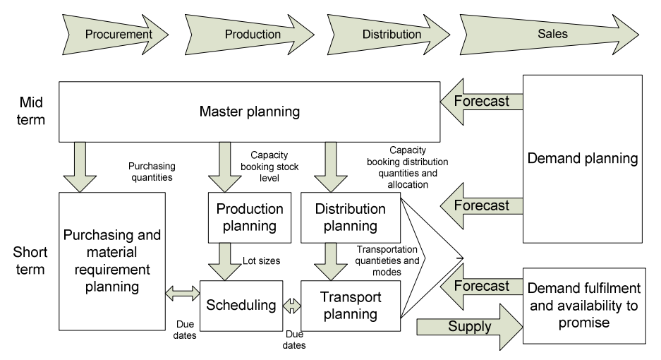
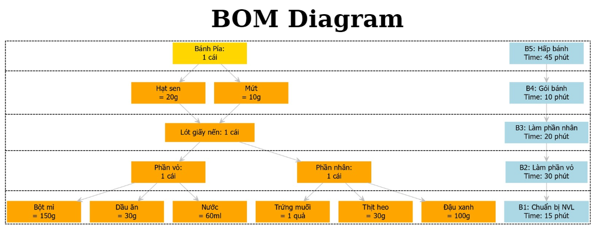
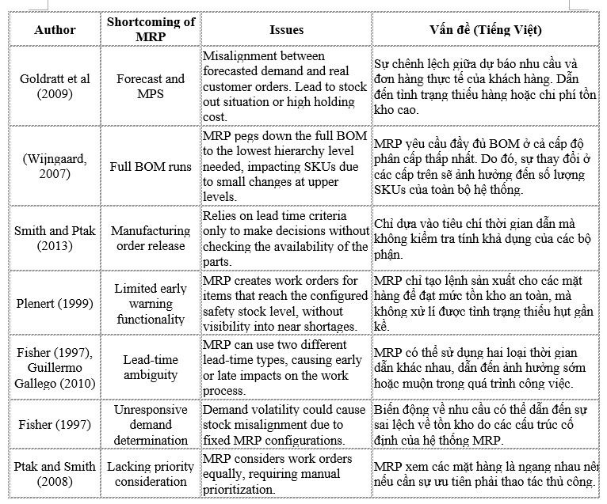

Đây là bài viết của tôi về cách sử dụng R trong việc lập kế hoạch MRP cho quản lý chuỗi cung ứng
SupplyChainManagement
MRP
Author
Cao Xuân Lộc
Published
October 6, 2024
1 Giới thiệu:
Hôm nay chúng ta sẽ học về một hoạt động quan trọng trong các hoạt động quản lí chuỗi cung ứng - Material Requirement Planning.
Nhắc lại bài cũ, từ nghiên cứu của (Natalia Szozda and Sylwia Werbińska-Wojciechowska2 2013), ta đã học về một function quan trọng là Demand planning và cách sử dụng R để dự đoán được nhu cầu của khách hàng trong tương lai. Vậy sau khi đã có số liệu dự đoán, ta sẽ bắt đầu xây dựng kế hoạch phân phối nhằm đảm bảo đủ lượng hàng hóa trưng bày bán cho khách hàng ở các cửa hàng, trung tâm thương mại, siêu thị,…

Hình 1: Tổng quan các hoạt động quan trọng trong Supply Chain Management
Vậy hàng hóa lấy ở đâu để phân phối ? Hàng hóa thường sẽ lấy từ nhà kho gần nhất để giảm chi phí vận chuyển. Nhưng nếu hàng hóa ở kho không đủ thì ta cần gửi yêu cầu cho phòng Production (Sản xuất) để họ lên kế hoạch sản xuất ra hàng hóa mới bù vào khoảng thiếu hụt. Sau khi đã xác định kế hoạch rõ ràng, phòng Production (Sản xuất) sẽ gửi yêu cầu cho phòng Procument (Thu mua) để mua các nguyên vật liệu cần thiết cho việc sản xuất.
Bạn có thể thấy quy trình làm việc phức tạp phải không ? Nhưng quy trình này chỉ bao gồm các hoạt động của việc quản lí chuỗi cung ứng của 1 sản phẩm duy nhất. Thông thường, các công ty sẽ có vài chục đến hàng trăm sản phẩm khác nhau. Ví dụ như công ty đa quốc gia Unilever có đến 400 nhãn hàng và mỗi nhãn hàng trung bình sẽ có 10-20 sản phẩm nên bạn có thể tưởng tượng được mức độ phức tạp và dày đặc của những kế hoạch sản xuất, phân phối hằng tuần hằng tháng.
Vì vậy, để xử lí công việc này, các nhà chuyên gia đã đề xuất ra công cụ Material Requirement Planning và cũng là keyword mà chúng ta sẽ tìm hiểu và thực hành ở R trong bài viết này.
2 Material requirement planning:
2.1 Định nghĩa:
Về định nghĩa, theo (David Essex, n.d.) ,MRP có thể hiểu là kế hoạch yêu cầu vật liệu và là hệ thống tính toán các vật liệu và linh kiện cần thiết cho sản xuất. Nó bao gồm ba bước: kiểm kê hiện có, xác định vật liệu cần thêm, và lập kế hoạch sản xuất hoặc mua sắm.
Hình 2: Phần mềm MRP Fishbowl
Như hình trên là ứng dụng Fishbowl - được thành lập vào năm 2001 bởi David Williams và một nhóm các nhà phát triển phần mềm tại Utah, Hoa Kỳ. Mục tiêu ban đầu của công ty là tạo ra một giải pháp phần mềm giúp các doanh nghiệp nhỏ và vừa quản lý kho và quy trình sản xuất một cách hiệu quả hơn.
2.2 Lý do sử dụng:
MRP quan trọng vì giúp đảm bảo có đủ tồn kho đúng thời điểm với chi phí thấp nhất, cải thiện hiệu quả, linh hoạt và lợi nhuận của sản xuất. Nó nâng cao năng suất lao động, chất lượng sản phẩm và giảm chi phí. MRP cũng giúp các nhà sản xuất nhanh chóng đáp ứng nhu cầu thị trường và tránh tình trạng thiếu hàng, góp phần vào sự tăng trưởng doanh thu.
Thông thường, MRP sẽ kết hợp như một tính năng trong phần mềm WMS - Warehouse Management Software vì việc lên kế hoạch vật tư cần dựa vào thông tin đầu vào là hàng hóa, nguyên vật liệu tồn kho còn lại bao nhiêu để tính toán đúng số lượng vừa đủ để đặt hàng, tránh việc dư thừa, tồn kho.
3 Cách xây dựng MRP:
Vậy làm sao để xây dựng một kế hoạch MRP thật tốt. Về cách tổng quát, ta sẽ có sơ đồ như dưới đây:
Code
# Gọi thư viện DiagrammeRlibrary(DiagrammeR)# Vẽ biểu đồDiagrammeR::grViz("digraph flowchart { graph [layout = dot, rankdir = TB] node [shape = rectangle, style = filled, fillcolor = lightblue] // Thêm tiêu đề với màu cam title [label = 'Quy trình Xây dựng MRP', shape = plaintext, fontcolor = black, fontsize = 40, fontname = 'Helvetica Bold', fillcolor = orange] A [label = '1. Xác định mục tiêu và yêu cầu'] B [label = '2. Tập hợp dữ liệu'] B1 [label = ' - Thông tin sản phẩm', fillcolor = lightyellow] B2 [label = ' - Tồn kho hiện tại', fillcolor = lightyellow] B3 [label = ' - Nhu cầu sản xuất', fillcolor = lightyellow] C [label = '3. Lựa chọn phần mềm MRP'] D [label = '4. Xây dựng cấu trúc BOM'] E [label = '5. Thiết lập quy trình MRP'] E1 [label = ' - Nhập dữ liệu', fillcolor = lightyellow] E2 [label = ' - Tính toán nhu cầu', fillcolor = lightyellow] E3 [label = ' - Lập kế hoạch', fillcolor = lightyellow] F [label = '6. Tính toán yêu cầu vật liệu'] G [label = '7. Lập kế hoạch sản xuất và mua sắm'] H [label = '8. Thực hiện và theo dõi'] // Kết nối tiêu đề { rank = same; title } title -> A A -> B -> C -> D -> E -> F -> G -> H B -> B1 [style=dashed, dir=back] B -> B2 [style=dashed, dir=back] B -> B3 [style=dashed, dir=back] E -> E1 [style=dashed, dir=back] E -> E2 [style=dashed, dir=back] E -> E3 [style=dashed, dir=back]}")
Hình 3: Các bước cần có trong việc xây dựng MRP
3.1 BOM là gì:
Trong quy trình có nhắc đến cụm từ BOM nghĩa là Bill of Material - là một tài liệu quan trọng trong sản xuất, cung cấp danh sách chi tiết các nguyên liệu, linh kiện và bộ phận cần thiết để sản xuất một sản phẩm cụ thể. Bạn có thể hình dung là để có thể tạo một chiếc bánh thì cần phải có đầy đủ các nguyên vật liệu để làm bánh từ máy xoay bột, lò nướng, bột, trứng,… và phải được chuẩn bị đầy đủ trước khi bắt tay vào làm bánh.
BOM không chỉ liệt kê các thành phần mà còn thường bao gồm thông tin như:
Số lượng: Số lượng của từng thành phần cần thiết.
Mã linh kiện: Mã hoặc số nhận diện của mỗi linh kiện.
Đơn vị đo: Đơn vị tính của từng nguyên liệu (ví dụ: kg, cái, mét).
Cấp độ: Cấp độ của mỗi thành phần trong cấu trúc sản phẩm, giúp xác định thứ tự lắp ráp.
Thông tin bổ sung: Có thể bao gồm thông tin về nhà cung cấp, yêu cầu chất lượng, hoặc hướng dẫn lắp ráp.
Để dễ hình dung, bạn có thể xem bảng dưới đây minh họa về BOM của xe hơi.
Bill of Material for vehicle components
List of required materials
Component Name
Quantity
Part Code
Unit
Khung xe
1
FRAME-001
cái
Động cơ
1
ENG-001
cái
Hệ thống truyền động
1
TRANS-001
cái
Bánh xe
4
WHEEL-001
cái
Hệ thống phanh
4
BRAKE-001
cái
Hệ thống treo
2 (trước), 2 (sau)
SUSP-001
cái
Nội thất
1 bộ
INTERIOR-001
bộ
Hệ thống điện
1 bộ
ELECTRICAL-001
bộ
Cửa
4
DOOR-001
cái
Kính chắn gió
1
WINDSHIELD-001
cái
Create by package {gt} in R
Bảng 1: Ví dụ về BOM cho sản phẩm xe ô tô
Nhưng thông thường, người ta sẽ trình bày BOM dưới dạng hình cây như này, khá giống Decision tree - một mô hình Machine Learning. Vì dụ ta có quy trình làm bánh pía như sau:
Bước 1: Chuẩn bị phần nhân:
Đậu xanh: Ngâm đậu xanh qua đêm, sau đó hấp chín và xay nhuyễn.
Thịt heo: Nếu sử dụng, xào thịt heo với một chút gia vị cho chín. Trộn đều với đậu xanh đã xay, thêm hạt sen (nếu dùng), mứt (nếu thích) và trộn đều cho đến khi hỗn hợp mịn.
Chia nhân thành các phần nhỏ, viên tròn và để nguội. Nếu có trứng muối, bạn có thể đặt vào giữa viên nhân.
Bước 2: Chuẩn bị phần vỏ:
Trộn bột mì, đường lại với nhau.
Từ từ thêm dầu ăn và nước vào bột, nhào cho đến khi bột mịn và không dính tay.
Chia bột thành các phần nhỏ tương ứng với số viên nhân.
Bước 3: Tạo hình bánh: - Cán mỏng từng miếng bột ra, sau đó đặt viên nhân vào giữa. - Gói kín lại và vo tròn bánh cho đẹp.
Bước 4: Nướng bánh: - Làm nóng lò ở 180 độ C. - Đặt bánh lên khay nướng có lót giấy nến. - Nướng khoảng 20-25 phút hoặc cho đến khi bánh có màu vàng đẹp.
Bước 5:. Hoàn thiện: - Để bánh nguội trước khi thưởng thức. Bánh pía ngon hơn khi để nguội.
{width = 80%}
Mục tiêu:giúp quản lý quy trình sản xuất hiệu quả hơn, đảm bảo rằng tất cả các nguyên liệu cần thiết đều có sẵn và đúng thời điểm, đồng thời giảm thiểu rủi ro về việc thiếu hụt nguyên liệu.
Như vậy, BOM có thể được xem là thành phần quan trọng nhất trong kế hoạch MRP.
3.2 Khó khăn trong thực tế:
Về lý thuyết xây dựng kế hoạch MRP không khó, bạn chỉ cần số liệu thực tế của kho, 1 bảng BOM như trên và dự đoán nhu cầu của khách hàng là sẽ tính toán được số lượng cần thiết nhưng thực tế bao giờ cũng khác xa với lý thuyết.
Theo nghiên cứu của(Baskaran4 2018), tác giả đề cập đến các vấn đề thường gặp đối với MRP:

Hình 5: Các vấn đề thường gặp khi dùng MRP
Nếu bạn lười đọc, mình sẽ tóm tắt lại:
Hệ thống MRP đòi hỏi dữ liệu đầu vào chính xác và cụ thể thì mới đưa ra kết quả ít sai lệch với thực tế.
MRP gặp khó khăn khi đối mặt với sự thay đổi đột ngột về tồn kho, nguyên nhân có thể là do xuất hiện uncertainty demand hoặc thiếu các bảng BOM. Điều này làm cho việc lên kế hoạch trước không đạt hiệu quả cao.
Khi có sự thay đổi ở cấp trên, MRP sẽ phải tính toán lại toàn bộ nên điều này rất tốn thời gian và nguồn lực.
Tuy vậy, việc ứng dụng MRP vẫn rỗng rãi vì nó thích hợp với mọi kiểu công ty, doanh nghiệp.
3.3 Công thức tính:
Vậy để xây dựng kế hoạch MRP, ta cần tính toán các tham số dưới đây:
How to Calculate the MRP
How to Calculate the MRP
3.3.1 Predicted demand
Đầu tiên, vẫn là dự đoán nhu cầu của khách hàng trong tương lai. Tùy vào kế hoạch bạn xây dựng, có thể là 1 tháng, 3 tháng hoặc 6 tháng … mà chọn. Như đã đề cập ở trên, đây là dữ liệu quan trọng làm đầu vào cho MRP và cũng là cơ sở để xác định Safety stock.
3.3.2 Gross requirement
Về định nghĩa, Gross requirement là tổng nhu cầu cho một vật liệu hoặc linh kiện cụ thể trong một khoảng thời gian nhất định, mà không xem xét bất kỳ tồn kho có sẵn hay các khoản thu nhập đã lên lịch.
Scheduled Receipts là thuật ngữ dùng để chỉ các đơn hàng hoặc lô hàng đã được đặt và dự kiến sẽ được nhận trong một khoảng thời gian nhất định. Ví dụ bạn đang làm kế hoạch nhập vật liệu A cho tháng 9 thì trước đó bạn đã đặt hàng vật liệu A là 1000 cái thì scheduled receipts sẽ bằng 1000. Do đó giả sử đơn giản là bạn đang đơn hàng 2000 cái thì bạn chỉ cần đặt hàng 1000 cái nữa vào tháng 9.
Dữ liệu để tính toán sẽ thường lấy từ các Purchase Orders từ phòng thu mua hoặc Orders từ các nhà phân phối.
3.3.4 On-Hand Inventory
On-hand inventory nghĩa là lượng hàng hóa còn tồn đọng trong kho, cửa hàng của bạn tại một thời điểm nào đó. Dữ liệu này dễ dàng lấy được từ các báo cáo theo ngày, theo tuần ở các cửa hàng, kho.
Net requirement nghĩa là lượng hàng hóa còn thiếu để thỏa mãn hết tất cả nhu cầu trong tương lai mà mình đã dự đoán. Công thức tính cũng đơn giản như dưới đây.
Giả sử, bạn dự đoán tháng sau có 1000 đơn hàng, bạn đã có 200 On-hand inventory và 300 Scheduled receipt vậy thì bạn chỉ cần đặt thêm nguyên vật liệu để sản xuất đủ 500 đơn hàng nữa là xong. Đó cũng chính là số lượng cần xác định trong kế hoạch MRP.
Tiếp theo ta sẽ tìm hiểu thêm về khái niệm Safety stock và reorder point ở trang Thời gian xây dựng MRP
References
Baskaran4, Hairul Rizad Md Sapry1*, Lorio L’ wiey Anak Tawi 2, Abd Rahman Ahmad3, Shathees. 2018. “The Effectiveness of MRP System to Forecast the Accuracy Inventory Requirement.”International Journal of Engineering & Technology.
---title: "Giới thiệu"subtitle: "Việt Nam, 2024"categories: ["SupplyChainManagement", "MRP"]description: "Đây là bài viết của tôi về cách sử dụng R trong việc lập kế hoạch MRP cho quản lý chuỗi cung ứng"author: "Cao Xuân Lộc"date: "2024-10-06"number-sections: truebibliography: references.bibtitle-block-banner: img/background.jpgtitle-block-banner-color: "white"format: html: code-fold: true code-tools: true---# Giới thiệu:Hôm nay chúng ta sẽ học về một hoạt động quan trọng trong các hoạt động quản lí chuỗi cung ứng - **Material Requirement Planning**.Nhắc lại bài cũ, từ nghiên cứu của [@nataliaszozda2013], ta đã học về một *function* quan trọng là [Demand planning](https://loccx78vn.github.io/Forecasting_time_series/) và cách sử dụng R để dự đoán được nhu cầu của khách hàng trong tương lai. Vậy sau khi đã có số liệu dự đoán, ta sẽ bắt đầu xây dựng **kế hoạch phân phối** nhằm đảm bảo đủ lượng hàng hóa trưng bày bán cho khách hàng ở các cửa hàng, trung tâm thương mại, siêu thị,...{fig-align="center"}Vậy hàng hóa lấy ở đâu để phân phối ? Hàng hóa thường sẽ lấy từ nhà kho gần nhất để giảm chi phí vận chuyển. Nhưng nếu hàng hóa ở kho không đủ thì ta cần gửi yêu cầu cho phòng **Production (Sản xuất)** để họ lên kế hoạch sản xuất ra hàng hóa mới bù vào khoảng thiếu hụt. Sau khi đã xác định kế hoạch rõ ràng, phòng **Production (Sản xuất)** sẽ gửi yêu cầu cho phòng **Procument (Thu mua)** để mua các nguyên vật liệu cần thiết cho việc sản xuất.Bạn có thể thấy quy trình làm việc phức tạp phải không ? Nhưng quy trình này chỉ bao gồm các hoạt động của việc quản lí chuỗi cung ứng của **1 sản phẩm duy nhất**. Thông thường, các công ty sẽ có vài chục đến hàng trăm sản phẩm khác nhau. Ví dụ như công ty đa quốc gia **Unilever** có đến 400 nhãn hàng và mỗi nhãn hàng trung bình sẽ có 10-20 sản phẩm nên bạn có thể tưởng tượng được mức độ phức tạp và dày đặc của những kế hoạch sản xuất, phân phối hằng tuần hằng tháng.Vì vậy, để xử lí công việc này, các nhà chuyên gia đã đề xuất ra công cụ **Material Requirement Planning** và cũng là *keyword* mà chúng ta sẽ tìm hiểu và thực hành ở R trong bài viết này.# Material requirement planning:## Định nghĩa:Về định nghĩa, theo [@davidessex] ,**MRP** có thể hiểu là kế hoạch yêu cầu vật liệu và là hệ thống tính toán các vật liệu và linh kiện cần thiết cho sản xuất. Nó bao gồm ba bước: kiểm kê hiện có, xác định vật liệu cần thêm, và lập kế hoạch sản xuất hoặc mua sắm.{width=80%}Như hình trên là ứng dụng **Fishbowl** - được thành lập vào năm 2001 bởi David Williams và một nhóm các nhà phát triển phần mềm tại Utah, Hoa Kỳ. Mục tiêu ban đầu của công ty là tạo ra một giải pháp phần mềm giúp các doanh nghiệp nhỏ và vừa quản lý kho và quy trình sản xuất một cách hiệu quả hơn.## Lý do sử dụng:**MRP** quan trọng vì giúp đảm bảo có đủ tồn kho đúng thời điểm với chi phí thấp nhất, cải thiện hiệu quả, linh hoạt và lợi nhuận của sản xuất. Nó nâng cao năng suất lao động, chất lượng sản phẩm và giảm chi phí. **MRP** cũng giúp các nhà sản xuất nhanh chóng đáp ứng nhu cầu thị trường và tránh tình trạng thiếu hàng, góp phần vào sự tăng trưởng doanh thu.Thông thường, **MRP** sẽ kết hợp như một tính năng trong phần mềm **WMS - Warehouse Management Software** vì việc lên kế hoạch vật tư cần dựa vào thông tin đầu vào là hàng hóa, nguyên vật liệu tồn kho còn lại bao nhiêu để tính toán đúng số lượng vừa đủ để đặt hàng, tránh việc dư thừa, tồn kho.# Cách xây dựng MRP:Vậy làm sao để xây dựng một kế hoạch **MRP** thật tốt. Về cách tổng quát, ta sẽ có sơ đồ như dưới đây:```{r}#| warning: false#| message: false#| fig-subcap: "Hình 3: Các bước cần có trong việc xây dựng MRP"# Gọi thư viện DiagrammeRlibrary(DiagrammeR)# Vẽ biểu đồDiagrammeR::grViz("digraph flowchart { graph [layout = dot, rankdir = TB] node [shape = rectangle, style = filled, fillcolor = lightblue] // Thêm tiêu đề với màu cam title [label = 'Quy trình Xây dựng MRP', shape = plaintext, fontcolor = black, fontsize = 40, fontname = 'Helvetica Bold', fillcolor = orange] A [label = '1. Xác định mục tiêu và yêu cầu'] B [label = '2. Tập hợp dữ liệu'] B1 [label = ' - Thông tin sản phẩm', fillcolor = lightyellow] B2 [label = ' - Tồn kho hiện tại', fillcolor = lightyellow] B3 [label = ' - Nhu cầu sản xuất', fillcolor = lightyellow] C [label = '3. Lựa chọn phần mềm MRP'] D [label = '4. Xây dựng cấu trúc BOM'] E [label = '5. Thiết lập quy trình MRP'] E1 [label = ' - Nhập dữ liệu', fillcolor = lightyellow] E2 [label = ' - Tính toán nhu cầu', fillcolor = lightyellow] E3 [label = ' - Lập kế hoạch', fillcolor = lightyellow] F [label = '6. Tính toán yêu cầu vật liệu'] G [label = '7. Lập kế hoạch sản xuất và mua sắm'] H [label = '8. Thực hiện và theo dõi'] // Kết nối tiêu đề { rank = same; title } title -> A A -> B -> C -> D -> E -> F -> G -> H B -> B1 [style=dashed, dir=back] B -> B2 [style=dashed, dir=back] B -> B3 [style=dashed, dir=back] E -> E1 [style=dashed, dir=back] E -> E2 [style=dashed, dir=back] E -> E3 [style=dashed, dir=back]}")```## BOM là gì:Trong quy trình có nhắc đến cụm từ **BOM** nghĩa là **Bill of Material** - là một tài liệu quan trọng trong sản xuất, cung cấp danh sách chi tiết các nguyên liệu, linh kiện và bộ phận cần thiết để sản xuất một sản phẩm cụ thể. Bạn có thể hình dung là để có thể tạo một chiếc bánh thì cần phải có đầy đủ các nguyên vật liệu để làm bánh từ máy xoay bột, lò nướng, bột, trứng,... và phải được chuẩn bị đầy đủ trước khi bắt tay vào làm bánh.**BOM** không chỉ liệt kê các thành phần mà còn thường bao gồm thông tin như:1. **Số lượng**: Số lượng của từng thành phần cần thiết.2. **Mã linh kiện**: Mã hoặc số nhận diện của mỗi linh kiện.3. **Đơn vị đo**: Đơn vị tính của từng nguyên liệu (ví dụ: kg, cái, mét).4. **Cấp độ**: Cấp độ của mỗi thành phần trong cấu trúc sản phẩm, giúp xác định thứ tự lắp ráp.5. **Thông tin bổ sung**: Có thể bao gồm thông tin về nhà cung cấp, yêu cầu chất lượng, hoặc hướng dẫn lắp ráp.Để dễ hình dung, bạn có thể xem bảng dưới đây minh họa về **BOM** của xe hơi.```{r}#| warning: false#| message: false#| echo: false#| fig-subcap: "Bảng 1: Ví dụ về BOM cho sản phẩm xe ô tô"# Cài đặt và tải gói gt nếu chưa có# install.packages("gt")library(gt)library(gtExtras)# Tạo dữ liệu cho bảng BOMbom_data <-data.frame( Tên_Thành_Phần =c("Khung xe", "Động cơ", "Hệ thống truyền động", "Bánh xe", "Hệ thống phanh", "Hệ thống treo", "Nội thất", "Hệ thống điện", "Cửa", "Kính chắn gió" ), Số_Lượng =c("1", "1", "1", "4", "4", "2 (trước), 2 (sau)", "1 bộ", "1 bộ", "4", "1" ), Mã_Linh_Kiện =c("FRAME-001", "ENG-001", "TRANS-001", "WHEEL-001", "BRAKE-001", "SUSP-001", "INTERIOR-001", "ELECTRICAL-001", "DOOR-001", "WINDSHIELD-001" ), Đơn_Vị_Đo =c("cái", "cái", "cái", "cái", "cái", "cái", "bộ", "bộ", "cái", "cái" ),stringsAsFactors =FALSE# Đảm bảo không chuyển đổi thành factors)# Tạo bảng với gtlibrary(gt)# Create a gt tablebom_data %>%gt() %>%tab_header(title ="Bill of Material for vehicle components",subtitle =md("List of required materials") ) %>%cols_label( Tên_Thành_Phần ="Component Name", Số_Lượng ="Quantity", Mã_Linh_Kiện ="Part Code", Đơn_Vị_Đo ="Unit" ) %>%fmt_number(columns =vars(Số_Lượng),decimals =0 ) %>%tab_style(style =list(cell_fill(color ="lightblue"),cell_text(weight ="bold", color ="black") ),locations =cells_title(groups ="title") ) %>%tab_style(style =cell_fill(color ="lightgrey"),locations =cells_column_labels(everything()) ) %>%tab_style(style =list(cell_text(color ="darkblue"),cell_fill(color ="white") ),locations =cells_body(columns =everything()) ) %>%# Add color for each unique value in the "Unit" columntab_style(style =cell_fill(color ="lightgreen"),locations =cells_body(columns = Đơn_Vị_Đo, rows = Đơn_Vị_Đo =="cái") ) %>%tab_style(style =cell_fill(color ="lightcoral"),locations =cells_body(columns = Đơn_Vị_Đo, rows = Đơn_Vị_Đo =="bộ") ) %>%tab_options(table.font.size =14,table.width =pct(100),row.striping.include_table_body =TRUE,row.striping.background_color ="lightyellow" ) %>%tab_source_note(source_note ="Create by package {gt} in R" ) %>%gt_theme_pff()```Nhưng thông thường, người ta sẽ trình bày **BOM** dưới dạng hình cây như này, khá giống *Decision tree* - một mô hình *Machine Learning*. Vì dụ ta có quy trình làm bánh pía như sau:**Bước 1**: Chuẩn bị phần nhân:- Đậu xanh: Ngâm đậu xanh qua đêm, sau đó hấp chín và xay nhuyễn.- Thịt heo: Nếu sử dụng, xào thịt heo với một chút gia vị cho chín. Trộn đều với đậu xanh đã xay, thêm hạt sen (nếu dùng), mứt (nếu thích) và trộn đều cho đến khi hỗn hợp mịn.- Chia nhân thành các phần nhỏ, viên tròn và để nguội. Nếu có trứng muối, bạn có thể đặt vào giữa viên nhân.**Bước 2**: Chuẩn bị phần vỏ:- Trộn bột mì, đường lại với nhau.- Từ từ thêm dầu ăn và nước vào bột, nhào cho đến khi bột mịn và không dính tay.- Chia bột thành các phần nhỏ tương ứng với số viên nhân.**Bước 3**: Tạo hình bánh: - Cán mỏng từng miếng bột ra, sau đó đặt viên nhân vào giữa. - Gói kín lại và vo tròn bánh cho đẹp.**Bước 4**: Nướng bánh: - Làm nóng lò ở 180 độ C. - Đặt bánh lên khay nướng có lót giấy nến. - Nướng khoảng 20-25 phút hoặc cho đến khi bánh có màu vàng đẹp.**Bước 5**:. Hoàn thiện: - Để bánh nguội trước khi thưởng thức. Bánh pía ngon hơn khi để nguội.```{r}#| warning: false#| message: false#| echo: false#| output: false# Install and load the DiagrammeR librarylibrary(DiagrammeR)grViz(" digraph { layout = dot node [shape = box, style=filled, fontname=Helvetica, width=2, color = orange] edge [color = grey, arrowhead = vee] A[label = 'Bánh Pía:\n1 cái', color = '#FFD700', fontcolor = black] B[label = 'Hạt sen\n = 20g'] C[label = 'Mứt\n = 10g'] D[label = 'Lót giấy nến: 1 cái'] E[label = 'Phần vỏ:\n1 cái'] F[label = 'Bột mì\n= 150g'] G[label = 'Dầu ăn\n= 30g'] H[label = 'Nước\n= 60ml'] J[label = 'Phần nhân:\n1 cái'] K[label = 'Trứng muối\n= 1 quả'] L[label = 'Thịt heo\n= 30g'] Q[label = 'Đậu xanh\n= 100g'] Step1[label = 'B1: Chuẩn bị NVL\nTime: 15 phút', color = lightblue] Step2[label = 'B2: Làm phần vỏ\nTime: 30 phút', color = lightblue] Step3[label = 'B3: Làm phần nhân\nTime: 20 phút', color = lightblue] Step4[label = 'B4: Gói bánh\nTime: 10 phút', color = lightblue] Step5[label = 'B5: Hấp bánh\nTime: 45 phút', color = lightblue] A -> B A -> C B -> D C -> D D -> E D -> J E -> F E -> G E -> H J -> K J -> L J -> Q // Kết nối giữa các bước sản xuất với đường nét liền Step5 -> Step4 [style=solid] Step4 -> Step3 [style=solid] Step3 -> Step2 [style=solid] Step2 -> Step1 [style=solid] }")```{width = 80%} **Mục tiêu:** *giúp quản lý quy trình sản xuất hiệu quả hơn, đảm bảo rằng tất cả các nguyên liệu cần thiết đều có sẵn và đúng thời điểm, đồng thời giảm thiểu rủi ro về việc thiếu hụt nguyên liệu.*Như vậy, **BOM** có thể được xem là thành phần quan trọng nhất trong kế hoạch **MRP**.## Khó khăn trong thực tế:Về lý thuyết xây dựng kế hoạch **MRP** không khó, bạn chỉ cần số liệu thực tế của kho, 1 bảng **BOM** như trên và dự đoán nhu cầu của khách hàng là sẽ tính toán được số lượng cần thiết nhưng thực tế bao giờ cũng khác xa với lý thuyết.Theo nghiên cứu của[@baskaran42018], tác giả đề cập đến các vấn đề thường gặp đối với **MRP**:{fig-align="center"}Nếu bạn lười đọc, mình sẽ tóm tắt lại:- Hệ thống **MRP** đòi hỏi dữ liệu đầu vào chính xác và cụ thể thì mới đưa ra kết quả ít sai lệch với thực tế.- **MRP** gặp khó khăn khi đối mặt với sự thay đổi đột ngột về tồn kho, nguyên nhân có thể là do xuất hiện **uncertainty demand** hoặc thiếu các bảng **BOM**. Điều này làm cho việc lên kế hoạch trước không đạt hiệu quả cao.- Khi có sự thay đổi ở cấp trên, **MRP** sẽ phải tính toán lại toàn bộ nên điều này rất tốn thời gian và nguồn lực.Tuy vậy, việc ứng dụng **MRP** vẫn rỗng rãi vì nó thích hợp với mọi kiểu công ty, doanh nghiệp.## Công thức tính:Vậy để xây dựng kế hoạch **MRP**, ta cần tính toán các tham số dưới đây:```{=html}<!DOCTYPE html><html lang="en"><head> <meta charset="UTF-8"> <meta name="viewport" content="width=device-width, initial-scale=1.0"> <title>How to Calculate the MRP</title> <script type="text/javascript" src="https://www.gstatic.com/charts/loader.js"></script> <script type="text/javascript"> google.charts.load('current', { packages: ['orgchart'] }); google.charts.setOnLoadCallback(drawChart); function drawChart() { var data = new google.visualization.DataTable(); data.addColumn('string', 'Task'); data.addColumn('string', 'Parent'); data.addColumn('string', 'ToolTip'); data.addRows([ [{ v: 'MRP', f: 'Build MRP Plan' }, '', 'Final Calculation'], ['Gross Requirement', 'MRP', 'Step 2: Calculate Gross Requirement'], ['Safety Stock', 'MRP', 'Step 1: Determine Safety Stock'], ['Demand Forecast', 'Safety Stock', 'Predictive Demand'], ['Lead Time', 'Safety Stock', 'Time to Procure'], ['BOM (Bill of Material)', 'Gross Requirement', 'Material Breakdown'], ['Scheduled Receipts', 'Gross Requirement', 'Expected Inventory'], ['On-Hand Inventory', 'Gross Requirement', 'Current Stock'] ]); var chart = new google.visualization.OrgChart(document.getElementById('chart_div')); chart.draw(data, { allowHtml: true, nodes: { 'MRP': { 'color': '#1E90FF' }, 'Gross Requirement': { 'color': '#FF4500' }, 'Safety Stock': { 'color': '#32CD32' }, 'Demand Forecast': { 'color': '#FFD700' }, 'Lead Time': { 'color': '#FF69B4' }, 'BOM (Bill of Material)': { 'color': '#6A5ACD' }, 'Scheduled Receipts': { 'color': '#00FA9A' }, 'On-Hand Inventory': { 'color': '#FFB6C1' } }, 'size': 'medium', 'allowCollapse': true }); } </script> <style> body { display: flex; align-items: left; justify-content: left; flex-direction: column; } #chart_div { width: 80%; margin: 20px 0; } </style></head><body><h1>How to Calculate the MRP</h1><div id="chart_div"></div></body></html>```<script type="text/javascript"> google.charts.load('current', { packages: ['orgchart'] }); google.charts.setOnLoadCallback(drawChart);functiondrawChart() {var data =new google.visualization.DataTable(); data.addColumn('string','Task'); data.addColumn('string','Parent'); data.addColumn('string','ToolTip'); data.addRows([ [{ v:'MRP',f:'<a href="#build-mrp">Build MRP Plan</a>' },'','Final Calculation'], [{ v:'Gross Requirement',f:'<a href="#gross-requirement">Gross Requirement</a>' },'MRP','Step 2: Calculate Gross Requirement'], [{ v:'Safety Stock',f:'<a href="#safety-stock">Safety Stock</a>' },'MRP','Step 1: Determine Safety Stock'], [{ v:'Demand Forecast',f:'<a href="#predicted-demand">Demand Forecast</a>' },'Safety Stock','Predictive Demand'], [{ v:'Lead Time',f:'<a href="#determine-lead-time">Lead Time</a>' },'Safety Stock','Time to Procure'], [{ v:'BOM (Bill of Material)',f:'<a href="#bom">BOM (Bill of Material)</a>' },'Gross Requirement','Material Breakdown'], [{ v:'Scheduled Receipts',f:'<a href="#scheduled-receipts">Scheduled Receipts</a>' },'Gross Requirement','Expected Inventory'], [{ v:'On-Hand Inventory',f:'<a href="#on-hand-inventory">On-Hand Inventory</a>' },'Gross Requirement','Current Stock'] ]);var chart =new google.visualization.OrgChart(document.getElementById('chart_div')); chart.draw(data, {allowHtml:true,nodes: {'MRP': { 'color':'#1E90FF' },'Gross Requirement': { 'color':'#FF4500' },'Safety Stock': { 'color':'#32CD32' },'Demand Forecast': { 'color':'#FFD700' },'Lead Time': { 'color':'#FF69B4' },'BOM (Bill of Material)': { 'color':'#6A5ACD' },'Scheduled Receipts': { 'color':'#00FA9A' },'On-Hand Inventory': { 'color':'#FFB6C1' } },'size':'medium','allowCollapse':true }); }</script>### Predicted demand {#predicted-demand}Đầu tiên, vẫn là dự đoán nhu cầu của khách hàng trong tương lai. Tùy vào kế hoạch bạn xây dựng, có thể là 1 tháng, 3 tháng hoặc 6 tháng ... mà chọn. Như đã đề cập ở trên, đây là dữ liệu quan trọng làm đầu vào cho **MRP** và cũng là cơ sở để xác định *Safety stock*. ### Gross requirement {#gross-requirement}Về định nghĩa, *Gross requirement* là tổng nhu cầu cho một vật liệu hoặc linh kiện cụ thể trong một khoảng thời gian nhất định, mà không xem xét bất kỳ tồn kho có sẵn hay các khoản thu nhập đã lên lịch.$$\text{Gross Requirement} = \text{Total Demand} \times \text{Component Quantity per product}$$### Scheduled Receipts {#scheduled-receipts}*Scheduled Receipts* là thuật ngữ dùng để chỉ các đơn hàng hoặc lô hàng đã được đặt và dự kiến sẽ được nhận trong một khoảng thời gian nhất định. Ví dụ bạn đang làm kế hoạch nhập vật liệu **A** cho tháng 9 thì trước đó bạn đã đặt hàng vật liệu **A** là 1000 cái thì *scheduled receipts* sẽ bằng 1000. Do đó giả sử đơn giản là bạn đang đơn hàng 2000 cái thì bạn chỉ cần đặt hàng 1000 cái nữa vào tháng 9.Dữ liệu để tính toán sẽ thường lấy từ các *Purchase Orders* từ phòng thu mua hoặc *Orders* từ các nhà phân phối.### On-Hand Inventory {#on-hand-inventory}*On-hand inventory* nghĩa là lượng hàng hóa còn tồn đọng trong kho, cửa hàng của bạn tại một thời điểm nào đó. Dữ liệu này dễ dàng lấy được từ các báo cáo theo ngày, theo tuần ở các cửa hàng, kho.$$\text{On-Hand Inventory} = \text{Tồn kho đầu kỳ} + \text{Nhập kho} - \text{Xuất kho}$$### Net Requirements:*Net requirement* nghĩa là lượng hàng hóa còn thiếu để thỏa mãn hết tất cả nhu cầu trong tương lai mà mình đã dự đoán. Công thức tính cũng đơn giản như dưới đây. $$\text{Net Requirement} = \text{Gross Requirement}−\text{Scheduled Receipts}−\text{On-Hand Inventory}$$Giả sử, bạn dự đoán tháng sau có 1000 đơn hàng, bạn đã có 200 *On-hand inventory* và 300 *Scheduled receipt* vậy thì bạn chỉ cần đặt thêm nguyên vật liệu để sản xuất đủ 500 đơn hàng nữa là xong. Đó cũng chính là số lượng cần xác định trong kế hoạch **MRP**.Tiếp theo ta sẽ tìm hiểu thêm về khái niệm *Safety stock* và *reorder point* ở trang [Thời gian xây dựng MRP](Time.qmd)